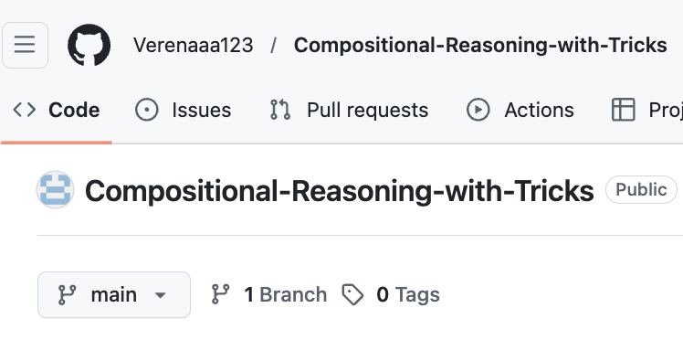

Project Demo 01
Compositional Reasoning with Tricks
Core Member: NLP2CT Lab, Advisor: Dr. Derek F. Wong

Description: • Built a Python-based dataset framework, including full implementation code, to support large-scale math problem datasets.
Detailed:
- Planned to apply Reinforcement Learning and Direct Preference Optimization to enhance accuracy while reducing complexity
- Explored evaluation methods for large models and techniques to measure mathematical expression difficulty.
- Collected and curated datasets of math problems with step-by-step solutions and developed accompanying theoretical content.